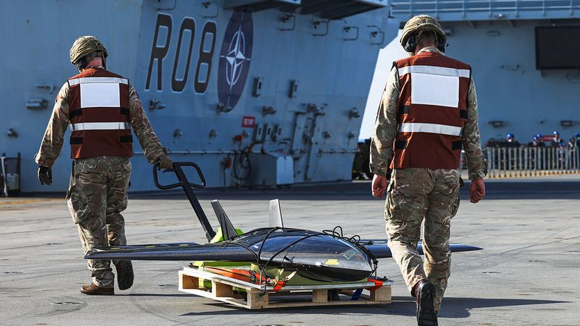

英国还能再统治海洋吗
Can Britannia rule the waves again?
一场可能改变海权性质的豪赌

- 英国军方面临钱少事多的困局：伊朗用廉价无人机威胁其空军基地已成常态，俄罗斯海军在其周边水域的活动一年增加四成，而美国正要求欧洲自负防务。
- 皇家海军把赌注全押在“混合海军”上：用有人、无人和自主舰艇混编，部分由人工智能整合，以大量小型廉价平台替代少数昂贵主力舰。
- 算账逻辑很清楚：作为指挥中枢的“通用作战舰”单艘约2亿英镑，而高端护卫舰是其五倍，防空驱逐舰超过25亿英镑，同样的钱能铺开更大的海域。
- 风险同样巨大：无人平台续航与火力都弱，与盟友的接口需要无缝打通，交战规则也要重新界定——攻击一艘无人舰是否算开战，没有先例可循。
英国军队处境窘迫。钱不够，危险却不少。伊朗对英国空军基地的威胁，因廉价攻击无人机而变得可信，并且正在成为常态。过去一年，俄罗斯在英国周边水域的海军活动增加了40%。美国要求欧洲为自己的安全买单，并在从防卫承诺中后退。前陆军首脑警告说，英国对冲突准备不足。它唯一真正成功的在世海军指挥官詹姆斯·邦德，是虚构的。
好消息是，需要是发明之母。皇家海军正把一笔巨大而冒险的赌注押在一支未来舰队上：一支“混合海军”，把有人舰艇、无人舰艇和自主舰艇混编，部分由人工智能整合。许多技术尚未得到验证，这场赌注可能反噬。但海军还是全押了，因为它相信自己别无选择。若成功，它将改变海权的性质。
英国海军有两项对欧洲盟友和北约安全至关重要的大任务。第一是让搭载核导弹的潜艇常年在海上值班，形成威慑。第二是保护北大西洋和北极高纬地区的通信线路与基础设施。战时这两项都至关重要，尤其是对俄作战——莫斯科正把资源大量投入北方舰队。
部分因为第一项任务耗资巨大（占英国国防预算的四分之一），海军认为若不做出改变，第二项任务可能失败。混合海军的根本思路，是把现役那些精密而极其昂贵的战舰的功能拆开，分散到许多更小、更灵活、更便宜的专用舰艇上。作为舰队指挥中枢的“通用作战舰”每艘造价应在2亿英镑（2.6亿美元），而一艘高端护卫舰约为其五倍，一艘防空驱逐舰超过25亿英镑。
新舰队有望比现有舰队更高效地控制海洋。舰体数量更多，能覆盖比少量战舰更大的区域。这些舰艇会比乌克兰在黑海用得出神入化的单向攻击艇大得多、也复杂得多，但因为更便宜、且往往无人，它们能承担更大的风险。
由于混合海军的舰艇建造更简单，会有更多商业船厂参与竞争，这有助于控制成本。这也让人想起美国航天局本世纪初向初创企业开放火箭项目的决定——那项政策催生了如今全球最大的企业之一SpaceX，并让美国在太空战领域取得巨大领先。
然而，让混合海军下水伴随着令人生畏的风险。海军无人机在续航力和火力上往往不如更大的有人战舰。而且英国的海上力量无法单打独斗。确保北大西洋和北极高纬地区的安全，需要与美国、法国和挪威密切协作，这些盟友必须无缝接入混合海军的新操作系统。
错误不可避免：没有哪个国家试过这条路。有些错误会来自混合舰队提出的新理论问题。如果俄罗斯攻击一艘有人战舰，英国会视为战争行为；如果攻击的是一艘无人舰呢？海军必须从自己犯的错误中学习，而且要快。
此外，没有足够的钱，这个项目就会沉没。英国海军官兵已经看明白：激进的新构想是从有限的预算里抢钱的好办法。让混合海军成军，到2035年可能还需要约320亿英镑，约为今年国防预算的一半。政府尚未说明这笔投资从哪来。即便如此，仍要为皇家海军喝彩。英国常常因畏惧风险而把自己交给停滞，它的海军正在做相反的事。